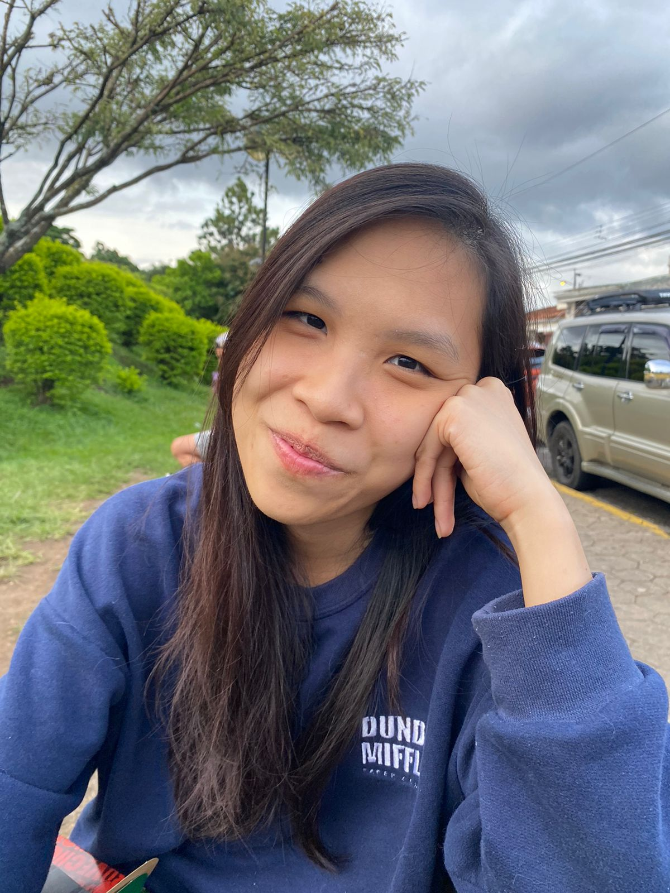
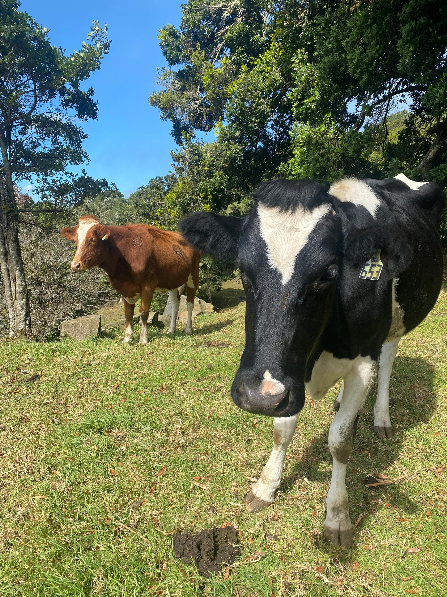

Sobre mí
Mi segundo nombre es Jesús, vivo en Desamparados y me encanta la pasta carbonara, los chicharrones, la montaña y mi novia.
Vaquitas en Poás
Aunque vivo actualmente en Desamparados, soy originalmente de Poás de Alajuela. En enero de este año visité junto con unos amigos esta zona del país caracterizada por sus fresas y vaquitas peludas.
